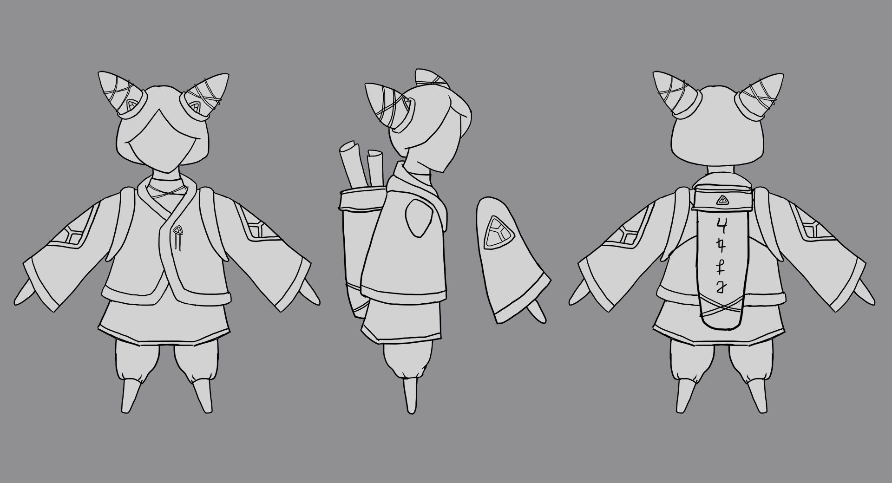

Week 4
PROGRESS UPDATE
Environment Design: Worked on a concept for the level and environment design.

Character Model: Started low-poly model of character in Blender. Next step is to add details in sculpt then retopo.
Structure Paper Prototype: Created to-scale paper prototype of one of the physical structures. Figured out measurements and some techniques for construction.

Week 3
REFERENCES
Wall-Mounted Level by Wizaga (2017)

Wall-Mounted Level by Wizaga is a co-op game with a tangible "screen" about reconciliation, developed in 2017. Using projection mapping and laser cutting, a tangible environment is created for the players to traverse. The two players must touch hands to go navigate through the environment, encouraging communication and empathy. I was mainly inspired by the use of the real, physical medium and the co-operative focused mechanics. The tangible wooden "screen" inspired the physical object mechanic of my project, since I thought the wooden screen added a lot of charm to the Wall-Mounted Level.
Lara Croft Go by Square Enix Montreal (2015)
Lara Croft Go is a mobile game developed in Square Enix Montreal in 2015. It is an isometric puzzle game, based on the popular character Lara Croft. I was inspired by the minimalist art style as it is simple but is still beautiful and detailed. As well, I liked the use of an isometric camera especially for my platformer-based project since it is easier to make 3D models and the environment more readable (rather than a 2D view). Finally, even though my project won't have a strong puzzle element, I liked the level design of the game as the puzzles are challenging but still clear.
Metafield Maze by Bill Keays & Ron MacNeil (1999)
Metafield Maze by Bill Keays and Ron MacNeil was developed in 1998 and was part of the Prix Ars Electronica Showcase in 1999. It is a 12 x 12 virtual maze projected on the floor where players control the tilt based on their movements, moving a virtual marble according the tilt. Once again, I was inspired by act of interacting with the physical interface in order to control some virtual element. I liked how Metafield Maze is scaled up, requiring players to use their whole bodies to tilt the projected maze.
PROGRESS UPDATE
Character Design
Finalized the character design and created a model sheet that will be used as reference for the 3D model.

Unity Prototype
Added some of the core mechanics for gameplay. Still have to figure out the level design but have movement, bridge, portal, ramp, and jump added. Each ability is mapped to a keyboard key (ex. bridge = K), so when makey-makey is integrated, each object just has to be mapped to the corresponding key.
Added some of the core mechanics for gameplay. Still have to figure out the level design but have movement, bridge, portal, ramp, and jump added. Each ability is mapped to a keyboard key (ex. bridge = K), so when makey-makey is integrated, each object just has to be mapped to the corresponding key.
Week 2
PROGRESS UPDATE
Project Description (In Progress)
2-player co-op platformer game. Player 1 controls the virtual character while Player 2 summons structures to aid Player 1 by touching real-life objects. Player 2 can choose to summon different sized bridges, stairs, portals, or temporarily give Player 1 the ability to jump (Allows Player 1 to clear obstacles withou Player 2's help). Materials used will be Unity, Blender, a Makey-Makey, and Balsa Wood to construct the real objects.
Rough Timeline
JAN 26: general concept art (especially buildings), figure out game camera
FEB 02: finalize designs, start rough prototype to test gameplay
FEB 09: FASA grant due, finish Unity prototype
FEB 16: start 3D production, start building structures
FEB 23: production (when asset is finished, add to Unity)
MAR 02: production
MAR 09: production
MAR 16: finish 3D assets, finish Unity assembly
MAR 23: finish building structures
MAR 30: integrate makey-makey to Unity build
APR 13: final build and presentation!
Concept Art
Created some initial structure designs inspired by asian architecture that will inform the overall look of the other structures. Also set up the Unity project, added basic character controls, and decided to go for an isometric camera.
Github Link

Created some initial structure designs inspired by asian architecture that will inform the overall look of the other structures. Also set up the Unity project, added basic character controls, and decided to go for an isometric camera.
Github Link
Week 1
INITAL PROJECT IDEAS
Idea 1: A 2-player co-op game in which player 1 controls the virtual character and player 2 summons structures in the game by touching real objects. The summons structures can be used to help player 1 cross obstacles or give the character temporary added abilities. Materials/Software to be used is a makey-makey, 3D modelling with Blender, and Unity. Material to construct the real objects TBD. Art style will be more illustrative/stylized and inspired by ancient architecture.

Idea 2: A platformer game projected on four sides of a rectangular prism. Players would move around the block, following the in-game character. The cube could also have details etched/drawn on with 3D levels adding a sense of depth. Then by using projection mapping, the game can be overlayed on top of the wooden cube.